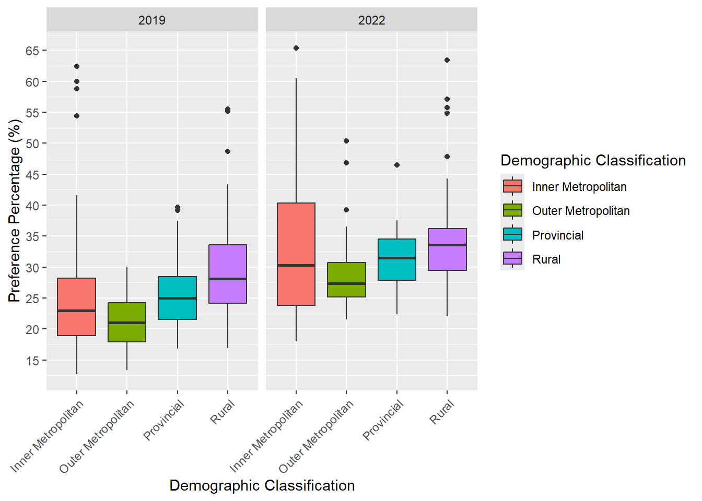
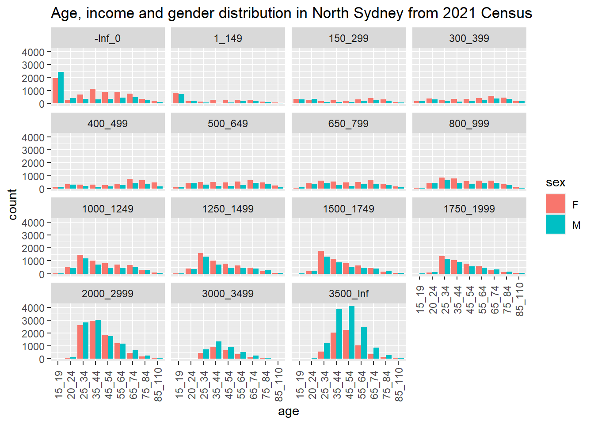
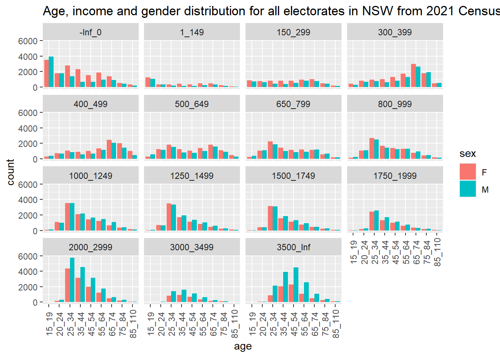
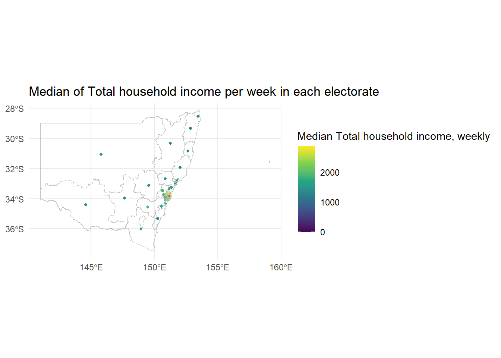
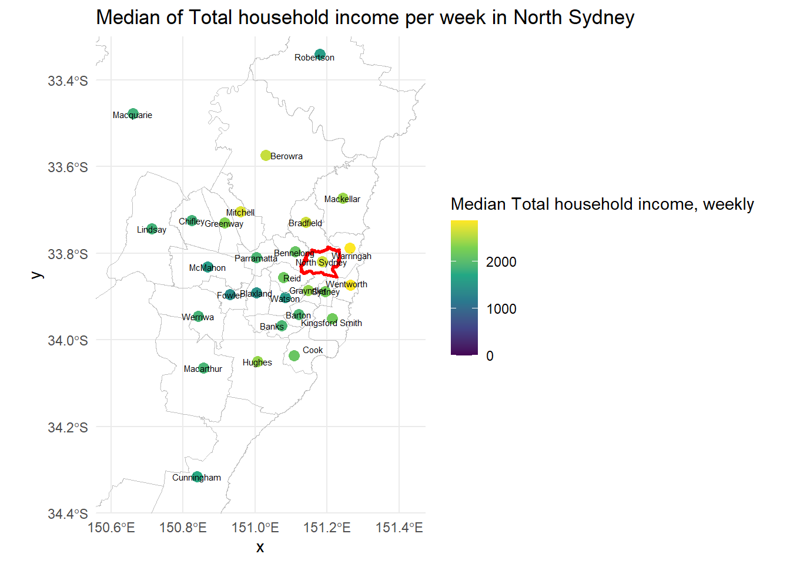
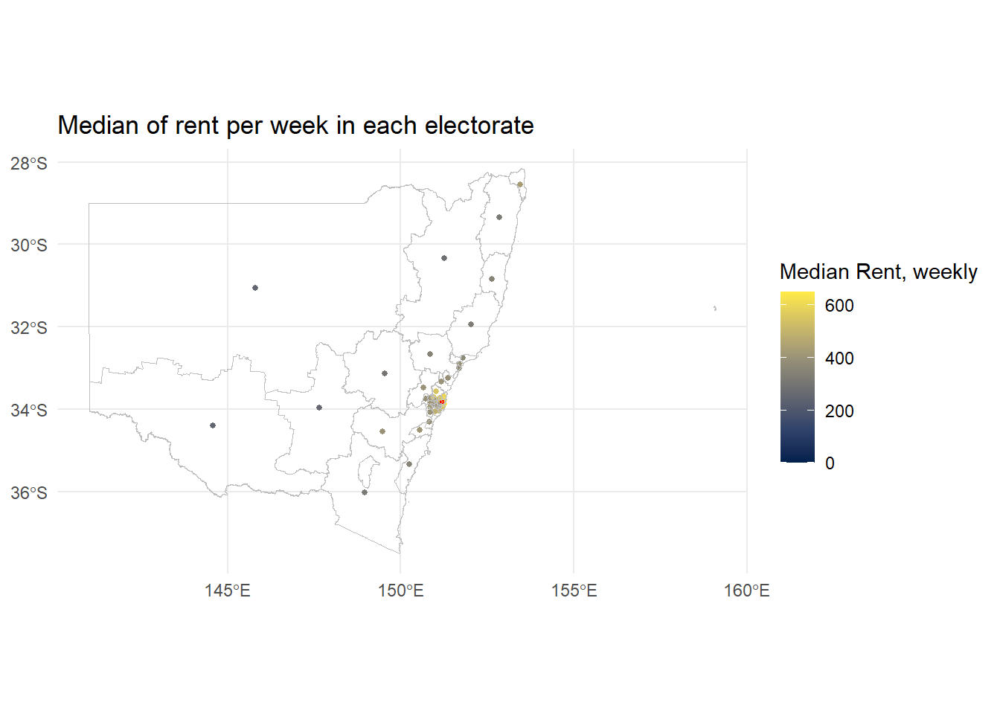
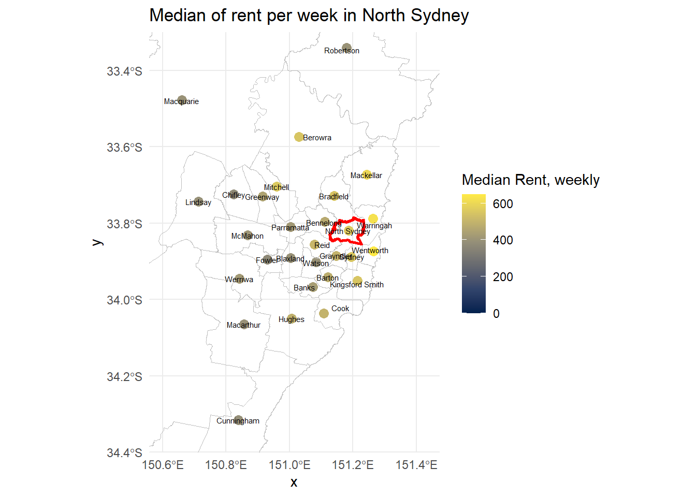
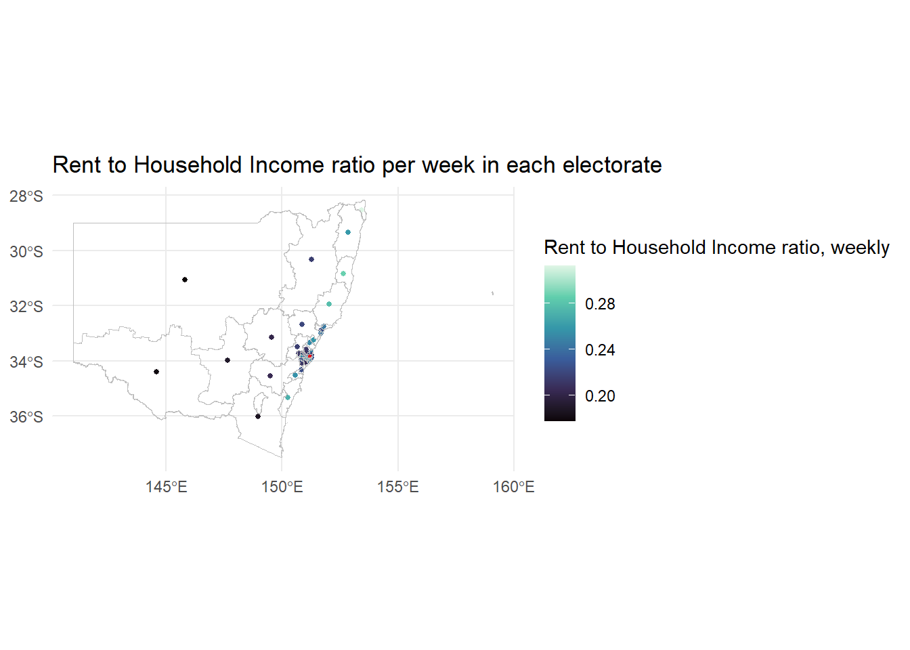
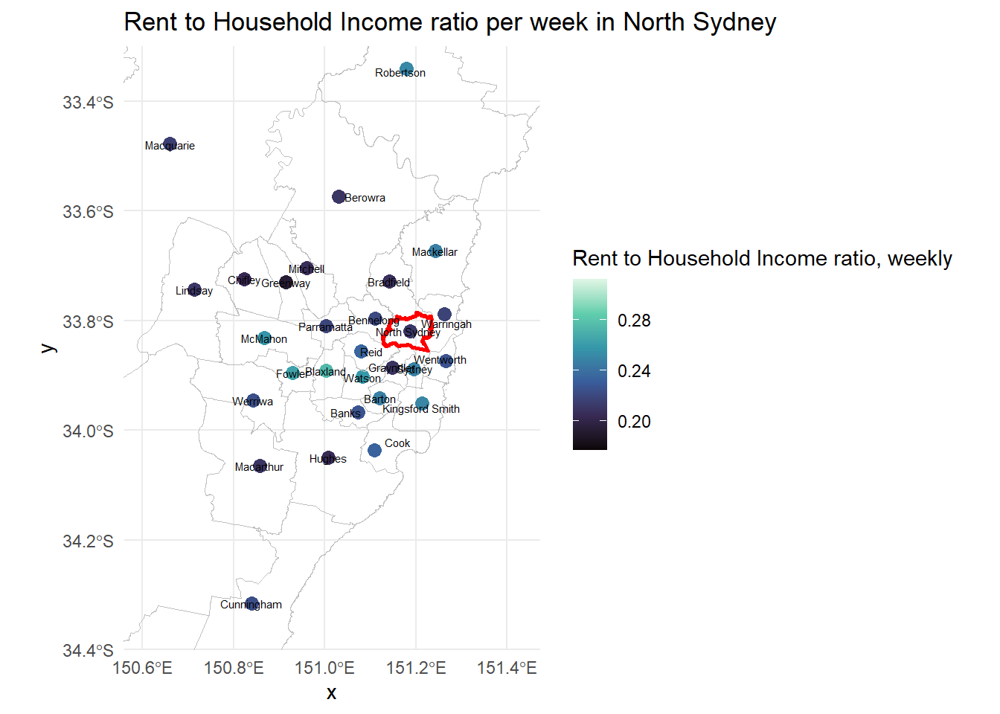

# A tibble: 10 × 4
division_nm party_ab `2019` `2022`
<chr> <chr> <chr> <chr>
1 Warringah IND Y Y
2 Clark IND Y Y
3 Indi IND Y Y
4 Fowler IND N Y
5 Mackellar IND N Y
6 North Sydney IND N Y
7 Wentworth IND N Y
8 Goldstein IND N Y
9 Kooyong IND N Y
10 Curtin IND N Y Project Background
This project analyses changes in support for independent and minor party candidates between the 2019 and 2022 Australian federal elections.
Independent Candidate Support Analysis
Data Collection and Preparation
The 2019 and 2022 preferential vote data by division were combined into a single dataset to support year-to-year comparison.
Independent Seat Changes from 2019 to 2022
Comparing 2022 to 2019, the results show that divisions were held for independents are Warringah, Clark, and Indi, while the new electoral wins for independents are Fowler, Mackellar, North Sydney, Wentworth, Goldstein, Kooyong, and Curtin.
Previous Party Control of Independent-Won Seats
# A tibble: 10 × 3
division_nm `2019` `2022`
<chr> <chr> <chr>
1 Warringah Independent Independent
2 Clark Independent Independent
3 Indi Independent Independent
4 Fowler Labor Independent
5 Mackellar Liberal Independent
6 North Sydney Liberal Independent
7 Wentworth Liberal Independent
8 Goldstein Liberal Independent
9 Kooyong Liberal Independent
10 Curtin Liberal IndependentParties previously held the independent seats won in 2022 beside themselves are Liberal and Labor.
First-Round Support for Independents and Minor Parties
# A tibble: 10 × 3
election_year division_nm preferencecount
<dbl> <chr> <dbl>
1 2019 Adelaide 25265
2 2022 Adelaide 31598
3 2019 Aston 15507
4 2022 Aston 23951
5 2019 Ballarat 22144
6 2022 Ballarat 27187
7 2019 Banks 11680
8 2022 Banks 17964
9 2019 Barker 19510
10 2022 Barker 24884# A tibble: 10 × 3
election_year division_nm preferenceper
<dbl> <chr> <dbl>
1 2019 Adelaide 23.6
2 2022 Adelaide 28.0
3 2019 Aston 15.5
4 2022 Aston 24.4
5 2019 Ballarat 21.6
6 2022 Ballarat 28.2
7 2019 Banks 12.7
8 2022 Banks 19.5
9 2019 Barker 18.5
10 2022 Barker 23.5From sample of the raw voter counts and the percentage of votes there are pros and cons as follows:
raw voter counts
- Pros
- Shows actual number of votes in each electorate
- Reflects real size of population
- Cons
- Hard to compare divisions with significant differences in population size
- It could lead to misinterpretation, as the high number of vote counts might represnet only a small portion in that electorate
percentage of votes
- Pros
- Standardises the data, making it comparable across divisions regardless of population size
- Makes it easier to analyse the supporting trend across years
- Cons
- It masks actual number of votes
- A small change in votes within an electorate with a small population size can lead to significant percentage change, which may misleadingly suggest a large increase in support.
Geographic Patterns in Voter Support

Overall, a consistent geographic pattern emerges where all area types (Inner Metropolitan, Outer Metropolitan, Provincial, and Rural) showed increased support for independents and minor parties in 2022 for the first round votes. However, the magnitude of change varied across each geography.
Inner Metropolitan areas saw largest increased support to independents and minor parties with uneven change across divisions.
Outer Metropolitan and Provincial areas showed similar increases with consistent voting patterns.
Rural areas maintained the highest overall median support in both elections
These patterns suggest that voters in all areas have shifted their preferences toward independents and minor parties, especially in urban centers, where voters showed dramatically uneven change in support for independents and minor parties in the 2022 election.
Key Findings and Political Implications
Key findings:
- Seat changes:
- Independents secured 10 seats in 2022, an increase of 7 seats from 2019.
- Seven of these seats were previously held by Labor and Liberal parties (Major parties).
- Voting trend from first round voting:
- The average first-round preference for independents and minor parties increased by 6.4%.
- About 88% of all divisions showed increased support for independents and minor parties.
- Geographic pattern:
- All area types showed increasing of support for independents and minor parties in 2022.
- Inner Metropolitan areas saw the largest increases, but with high variability, while other areas showed more consistent growth in support for independents and minor parties.
- Rural areas maintained the highest overall support in both elections.
Implication
As the voting trend has shifted toward independents and minor parties in recent years, coupled with increased in donations to independents after electoral reform limiting donations and expenditures passed parliament, these factors lead to a high possibility that independents or minor parties will win more seats in the upcoming election.
Moreover, the increased support for independents and minor parties across all geographic regions suggests that this is not just happening to metropolitan areas but is a broader electoral trend, especially in Inner Metropolitan areas where major party seats have become more vulnerable.
Therefore, maintaining seats for major parties could be done through developing their strategies for vulnerable seats in Inner Metropolitan areas and strengthening their connection in local areas which are at-risk electorates.
North Sydney Electorate Case Study
Demographic Profile of North Sydney

North Sydney, classified as an Inner Metropolitan area, was won by Independent in 2022 after being previously held by Liberal party in 2019. The demographic analysis shows several patterns as follows:
The majority of people in this electorate, particularly in the 25 to 44 age range, earn a high weekly income, especially in the ranges of $2,000 to $2,999 and over $3,500.
It is notable that number of males is higher than females in these high-income ranges.
The electorate has a significantly lower proportion of low to middle-income population in this electorate and female has slightly higher number than male in these income rages.
This suggests that the majority of population in this electorate has a high ability to access to highly-education and be able to make high income as a working professional. However, it might have an issue on inequality of gender as number of male being paid in higher income is more than female.
Comparison with Broader New South Wales

Comparing North Sydney electorate with entire NSW state shows:
People in North Sydney have higher average income than entire state as there is a high concentration in higher-income which is more than $2000, weekly.
Fewer seniors in North Sydney compared to the entire population of New South Wales, with a higher number of population in working-age.
North Sydney experiences more extreme gender income inequality than the state average, particularly in highest income ranges
The demographic differences between North Sydney and the rest of New South Wales state could support the rationale behind increased support toward independent candidates. The 2022 Independent victory likely resulted from campaign focusing on issues relevant to professional careers, addressing gender equality concerns, and demonstrating a strong understanding of connection with the local community.
Income, Rent, and Housing Affordability
The following plots will demonstrate Median_tot_hhd_inc_weekly and Median_rent_weekly from G02 census data for both North Sydney electorate and all electorates in New South Wales.
And as mentioned in part i, CED structure will be used for analysis as the division name from election data can be matched with structure code name.


First variable is Median_tot_hhd_inc_weekly which is a median of total household income per week. It is calculated by summing the personal incomes reported by all household members aged 15 years and over.
North Sydney shows a high median total household income of over $2,600 per week while the most of other electorates have a median total household income in the rage of $1,000 to $2,000 per week. Refer to income distribution in previous part, these patterns emphasize that North Sydney is a wealthy electorate with high number of working professional.
This high-income profile is likely linked to voter priorities, which tend to focus more on taxation policies more compared to middle or lower-income electorates.


Second variable is Median_rent_weekly which is a median of rent paid by household per week. It is derived from the Tenure type and Household payments questions on the Census form.
North Sydney also shows a high median rent amount more than $550 per week, while the most of other electorates have a median rent amount in the rage of $200 to $400 per week.
The high rent reflects the strong demand for housing in inner-city area, which could indicate the inner area has high volume of professional employment and a greater expectation for better facilities. However, since rent is a significant part of household budgets and is directly related with household income, we should consider rent-to-income ratio in the analysis.
Spatial Comparison Across NSW Electorates


North Sydney residents spend around 20% of their household income on rent, which is quite similar to other electorates in NSW with lower income. However, the proportion of rent to household income is still significantly high, affecting housing affordability.
These variables are politically significant because the demographic of high-income, high-rent in this electorate can influence voting patterns which will focus on economic management and taxation policies and maintaining property values.
Therefore, the victory of the independent candidate in North Sydney electorate in 2022 election is likely from focusing on these issues that matter to wealthy professionals who pay high rent. This shows how understanding local income and housing costs can help explain election results.
Is North Sydney Representative of NSW?
Based on my analysis, North Sydney electorate is not representative of the broader state population. The median of household income in North Sydney is exceeds $2,600 per week, which is significantly higher than across NSW electorates which are around $1,000 to $2,000. Similarly, the median of household rent per week is over $550 per week, compared to $200 to $400 in other NSW electorates.
These factors suggest that demographic of North Sydney consists mostly high-income professional households with less distribution in middle and lower income populations. As a result, It lacks the diversity found across NSW electorates and it is align only with other NSW electorates in a small cluster of urban areas.
Citations
Australian Electoral Commission. (n.d.). Voting in Australia. https://education.aec.gov.au/teacher-resources/files/voting-in-australia.pdf
Crowley, T. (2025, February 12). Labor, Coalition strike deal on electoral reform with watered-down caps and disclosure. ABC News. https://www.abc.net.au/news/2025-02-12/labor-coalition-strike-electoral-reform-deal/104928032
Manfield, E. (2025, February 14). Spike in donations to independents after election spending caps pass parliament. ABC News. https://www.abc.net.au/news/2025-02-14/independents-donation-spike-electoral-reform/104937430
Cameron, S., McAllister, I., Jackman, S., Sheppard, J., Griffith University, The University of Sydney, & The Australian National University. (2022). THE 2022 AUSTRALIAN FEDERAL ELECTION. https://australianelectionstudy.org/wp-content/uploads/The-2022-Australian-Federal-Election-Results-from-the-Australian-Election-Study.pdf
R: Viridis Color Palettes. (n.d.). https://search.r-project.org/CRAN/refmans/viridisLite/html/viridis.html
Wickham H, Averick M, Bryan J, Chang W, McGowan LD, François R, Grolemund G, Hayes A, Henry L, Hester J, Kuhn M, Pedersen TL, Miller E, Bache SM, Müller K, Ooms J, Robinson D, Seidel DP, Spinu V, Takahashi K, Vaughan D, Wilke C, Woo K, Yutani H (2019). “Welcome to the tidyverse.” Journal of Open Source Software, 4(43), 1686. doi:10.21105/joss.01686 https://doi.org/10.21105/joss.01686.
Müller K (2020). here: A Simpler Way to Find Your Files. R package version 1.0.1, https://CRAN.R-project.org/package=here.
Firke S (2024). janitor: Simple Tools for Examining and Cleaning Dirty Data. R package version 2.2.1, https://CRAN.R-project.org/package=janitor.
Wickham H, Bryan J (2023). readxl: Read Excel Files. R package version 1.4.3, https://CRAN.R-project.org/package=readxl.
Pebesma, E., & Bivand, R. (2023). Spatial Data Science: With Applications in R. Chapman and Hall/CRC. https://doi.org/10.1201/9780429459016
Pebesma, E., 2018. Simple Features for R: Standardized Support for Spatial Vector Data. The R Journal 10 (1), 439-446, https://doi.org/10.32614/RJ-2018-009
AI acknowledgment
I used ChatGPT(https://chat.openai.com/) to provide R coding guidance that were used for data manipulating for desired result and visualization including fixing code, then check grammar and vocabulary error. The final output is authored by me, critically reviewed for accuracy, and represents my own thoughts. I take full responsibility for the final content.